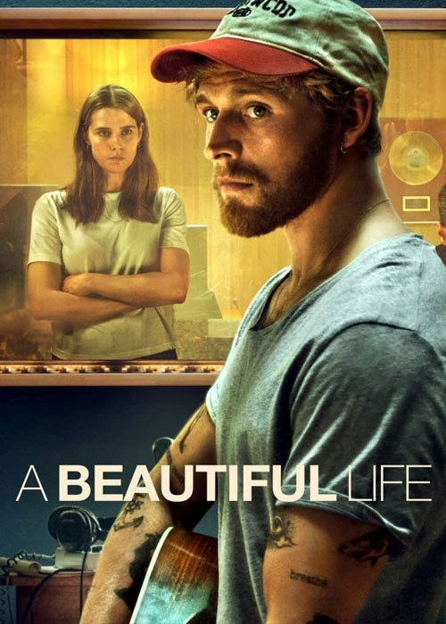
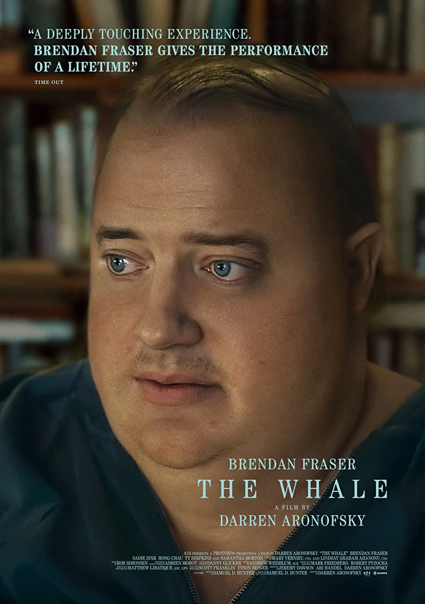
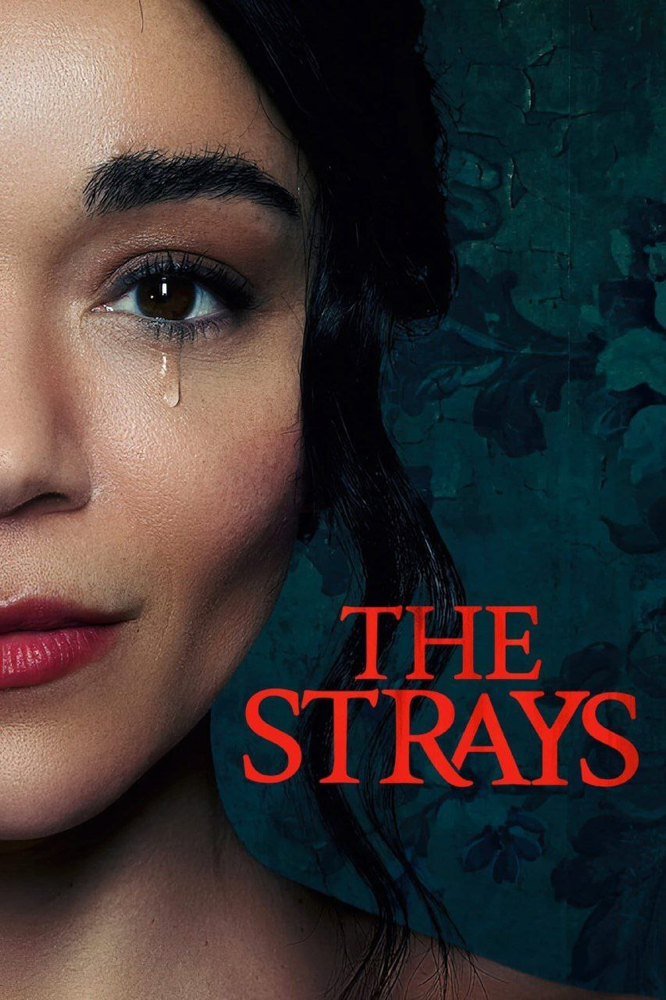

📺 نام فیلم: «تایرون را شبیه سازی کردند » 📆 سال تولید: 2023 💬 #زیرنویس_فارسی_چسبیده 🎭 ژانر : #اکشن، #رازآلود #علمیتخیلی ⭐️ امتیاز IMDb : 6.3/10 🌏 محصول کشور : #آمریکا 🕛 مدت زمان : 124 دقیقه 👤 کارگردان : Juel Taylor 💎 ستارگان : john boyega, jamie foxx, Teyonah Parris
🌀 خلاصه داستان : مجموعهای از اتفاقات ترسناک در یک گروه سه نفره که به یک توطئه دولتی شوم ختم میشود.

📺 نام فیلم: «یک زندگی زیبا» 📆 سال تولید: 2023 💬 #زیرنویس_فارسی_چسبیده 🎭 ژانر : #آهنگ | #درام | #عاشقانه ⭐️ امتیاز IMDb : 6.4/10 🌏 محصول کشور : #دانمارک 🕛 مدت زمان : 100 دقیقه 👤 کارگردان : Mehdi Avaz 💎 ستارگان : Christopher، Inga Ibsdotter Lilleaas، Sebastian Jessen
🌀 خلاصه داستان : داستان یک ماهیگیر جوان بهنام الیوت که صدایی خارقالعاده دارد و شانس در خونه او را میزند و سوزان که یک مدیر برنامه صنعت موسیقی است او را در یک مهمانی کشف میکند.

📺 نام فیلم: "نهنگ" 📆 سال انتشار: 2022 🗣 #زیرنویس_فارسی_چسبیده 🎭 ژانر : درام ⭐️ امتیاز IMDb : 8.0/10 🌏 محصول کشور : آمریکا 🕛 مدت زمان : 116 دقیقه 👤 کارگردان : #Darren_Aronofsky 💎 ستارگان : #Brendan_Fraser, #Sadie_Sink, #Ty_Simpkins
🌀 خلاصه داستان : یک معلم انگلیسی منزوی و چاق 270 کیلوگرمی که به طرز بیمارگونه ای چاق است، تلاش می کند تا با دختر نوجوان خود که از او جدا شده، ارتباط برقرار کند.

📺 نام فیلم : "ولگرد ها" 🗣 #زیرنویس_فارسی_چسبیده 📅 سال انتشار: 2023 🎭 ژانر : #درام | #هیجان_انگیز ⭐️ امتیاز IMDb : 5.5/10 🌏 محصول کشور : #بریتانیا 🕛 مدت زمان : 100 دقیقه 👤 کارگردان : Nathaniel Martello White 💎 ستارگان : #Rosie_Akerman, #Tom_Andrews, #Vanessa_Bailey
🌀 خلاصه داستان : فیلم داستان زندگی عالی و آرام زنی به نام "نیو" که به همراه خانواده دوست داشتنی خود در حومه شهر اقامت دارد، با ظاهر شدن دو غریبه مرموز و عجیب، کاملا تغییر میکند و ...